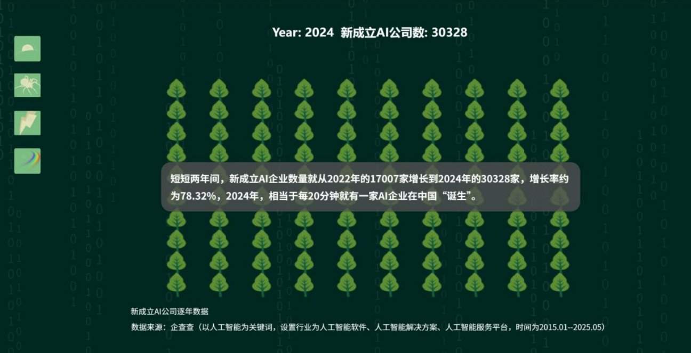

Case study · Data journalism · 2025
The jungle rules of AI entrepreneurship in China: an interactive story about the startups that don't make it.
First Prize · National Finals · 10th China Data Journalism Competition
Coverage of China's AI boom mostly celebrates the winners. We set out to move past survivor bias and ask what happens to the thousands of startups that struggle, and what decides who survives.
Long-form interviews with AI founders on funding, talent, computing costs and the pull of big tech.
Registration records analyzed by founding date, region, industry layer and operating status, alongside funding data.
A scrolling web story that alternates founder scenes with interactive charts, so every number has a person behind it.
new AI companies registered in 2024, up 78% from 17,007 in 2022.
AI startups closed in 2024, the worst year on record and nearly as many as 2020–2022 combined.
More than half of failing startups ran into trouble within their first 18 months.

Finding the story inside a large dataset, pairing numbers with real voices, and designing for how people actually scroll. These are the same skills I now bring to audience research and marketing.
Original story in Chinese. Some animations on the live page may no longer load; the PDF shows every chart and page as a still image.
© 2026 Yushi (April) Ma